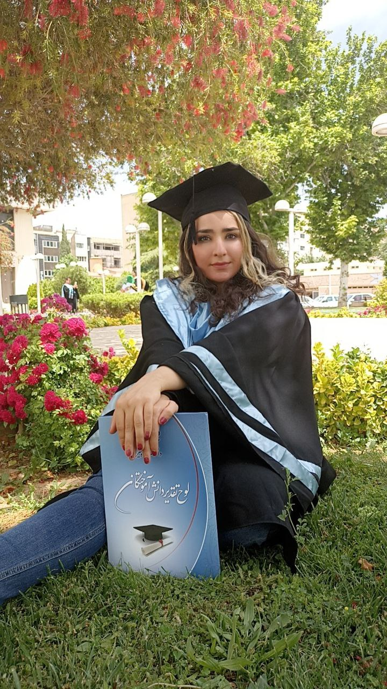

Intro

I am a Computer Science Ph.D. student at the University of Colorado Boulder, studying computer systems with a
focus on network and storage systems. I am passionate about using technology to solve real-world problems and
about exploring the latest advances in the field.
My programming work is mainly in Python, C/C++, and JavaScript, alongside tools such as Docker, Kubernetes, and
the common ML frameworks. Earlier academic projects include a food reservation web app built on the MERN stack,
a game console written in C, and a laptop price predictor using Python and machine learning.
As a teaching assistant I have supported CSCI 2400 Computer Systems at CU Boulder, and the Microprocessor and
Computer Architecture labs at Shiraz University, using simulation tools, Arduino, and C/C++. As a research
assistant I worked on cloud resource optimization involving Docker, DBaaS, and Kubernetes before moving to my
current work on LLM inference systems.
Outside of class I take part in technical and volunteer organizations, and I enjoy playing sports.
Work

I am a Computer Science Ph.D. student at the University of Colorado Boulder, working under the supervision of Professors
Eric Keller and
Shivakant Mishra. My research is in computer systems, with a
current focus on the storage and caching layers of large language model inference.
I am currently designing and implementing PESTO, a distributed caching system for LLM
inference. It reduces response latency by routing requests to servers that already hold the relevant cached
data, and by fetching remote cache only when it can arrive in time to be useful — which also eliminates
redundant storage across nodes.
Before that, I explored how KV-cache systems behave inside machine learning inference stacks and where the
bottlenecks appear in managing them, which is what led me to my present work.
Previously, I was a research assistant at the Distributed Computing Laboratory at Shiraz University under the
guidance of
Dr. Farshad Khunjush
, where our research focused on Serverless Computing and Federated Learning with an emphasis on
optimization objectives. That experience gave me valuable insight into Cloud Computing, AI, and Machine
Learning, and it was a privilege to work on these areas and expand my skills in the process.
Sara Daneshvar
sara.daneshvar@colorado.edu
Education
Ph.D. Computer Science, University of Colorado Boulder, Dec 2024 – Present
B.Sc. Computer Engineering, Shiraz University, Nov 2019 – Feb 2023,
16.73/20
High School Diploma, Farzanegan 1 High School — National Organization for
Development of Exceptional Talents (NODET/Sampad), 2012 – 2018
Research Interests
Computer systems, large language model inference, KV-cache and distributed caching, network
systems, cloud computing, machine learning systems
Experience
University of Colorado Boulder
Research Assistant — May 2026 – Present
- Designing and implementing PESTO, a distributed caching system for large language model inference
- Reduces response latency by routing requests to servers that already hold the relevant cached data
- Fetches remote cache only when it can arrive in time to be useful, eliminating redundant storage
across nodes
Research Assistant — Jan 2026 – Present
- Investigating performance optimization strategies for the storage side of LLM inference systems
Teaching Assistant — Aug 2025 – Jan 2026
- Taught labs and graded coursework on computer systems, assembly, and system-level code
optimization
- Worked with Course Assistants and faculty to improve how CAs support students
Prof. Maciej Zagrodzki and Prof. Sangtae Ha
Research Assistant — May 2025 – Aug 2025
- Studied inference in machine learning systems and how KV-cache systems behave within them
- Explored bottlenecks arising in the management of those caching systems
Prof. Eric Keller
Teaching Assistant — Jan 2025 – May 2025
- Taught students to work through CSCI 2400 Computer Systems, coding in C and using GitHub
Prof. Dirk Grunwald
Shiraz University
Teaching Assistant — Microprocessor Lab, Computer Architecture Lab,
Aug 2023 – Dec 2024
- Taught microprocessor design on Arduino boards
- Used Proteus, C/C++, PlatformIO IDE, and Arduino boards for simulation and coding
- Used VS Code, Verilog, and Icarus Verilog to code logic circuits
Dr. Mohsen Raji
Research Assistant — Distributed Computing Laboratory,
Dec 2022 – Dec 2024
- Focused on Database as a Service (DBaaS) and Serverless Computing, with an emphasis on
optimization objectives
- Expanded my knowledge of AI and Machine Learning
Dr. Farshad Khunjush
Bachelor Thesis - A Framework for Standardizing Graph Classification Dataset Formats, Shiraz University
- Standardized graph classification datasets into a specific format, enhancing the quality of research in the field.
- Evaluated a machine learning algorithm on standardized datasets, contributing to the advancement of graph
classification research
Razi Education Center
Student Researcher — Shiraz, Iran, Sep 2014 – Feb 2018
- Researched renewable energies and methods of applying them in different settings, with a focus on
solar energy
- Developed and studied more efficient systems and mechanisms for using solar energy in specific
situations
- Conducted research on solar systems and mushroom production
Publications and Patents
S. Daneshvar, "Development of a Solar Dryer for Production of button mushrooms", The Third National
Festival and
Exhibition of Medical Plants, Natural Products and Traditional Medicines, Imam Khomeini Mossalla,
Tehran,
September 2016.
Patent — Three-type solar dryer
Honors and Awards
- First place, Fars province, Kharazmi Festival
- Superior Student Technician, The Third National Festival and Exhibition of Medical Plants,
Natural Products and Traditional Medicines
- Third place, game development, National Festival of Art and Culture
- First place, Fars province, game development
- Second place, Fars province, game development
Certifications
- IELTS Academic — Band Score 7.5
- Transformer Models and BERT Model
- Attention Mechanism
- Introduction to Generative AI
Skills
Programming Languages: Python, C/C++, JavaScript, PHP
Technical: Assembly, Computer Architecture, Verilog, WSL2, Linux, Kubernetes,
Minikube, REST API, SQL, PostgreSQL, Oracle DB, PyTorch, TensorFlow, Distributed File Systems,
DBaaS
Software: Proteus, Docker, Canva
IDE: Visual Studio, Pycharm, Atom
Language Skills
Persian (native or bilingual), English (full professional), Turkish (elementary),
French (elementary), Spanish (elementary)